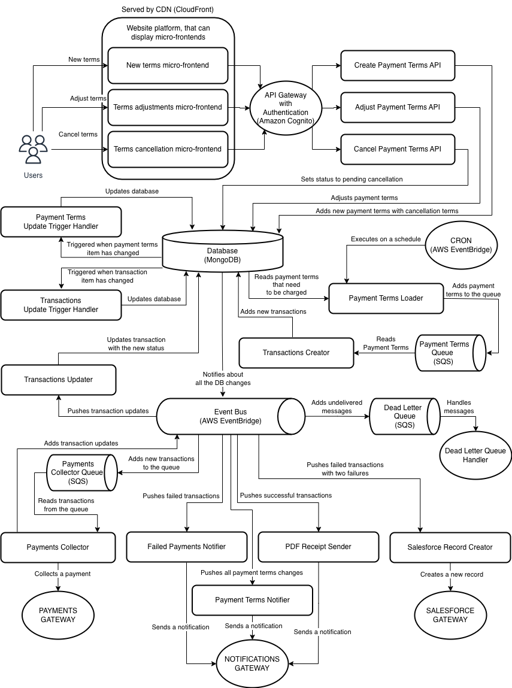

Financing solution for insurance policy
Objective
Build a financing solution that allows paying monthly for an insurance policy over the length of its term, which is usually 12 months. The financing system should accept the total cost of the product, it won’t have to calculate fees or taxes on the initial purchase. The system should support various payment and cancellation terms.
Payments Team Responsibility
- Checkout experience
- Customer data confirmation/validation
- E-Sign
- Financing
- Payments collection
- Invoicing integrations, backed by third-party solutions
- Implementation of solutions using MERN (MongoDB, Express, React, Node) stack
Payments Team Skills
- Work cross-functionally
- MERN (MongoDB, Express, React, Node) stack
- DevOps
- Some experience with distributed services
Functional Requirements
- Scheduled Charging:
Customers are charged for scheduled amounts via the Payments Gateway.
- Handling of Non-Sufficient Funds:
- Notify the customer.
- Retry the next day.
- Create a Salesforce record on the second failure for manual handling.
- Handling of Mid-Term Adjustments:
- Adjust insurance policy terms.
- Calculate payment change delta.
- Change the existing financing plan to charge a new amount.
- Handling of Cancellations:
Calculate the refund based on the cancellation terms provided when the payment terms were initially started.
- Communication:
- Send receipts to the customers on every charge.
- Send an email to the customers on every change of financing terms.
- Send a notification to the customers on non-sufficient funds errors.
Non-Functional Requirements
- Secure:
- Use Serverless that utilizes secure AWS infrastructure.
- Use JWT Authorizers with API Gateway and Amazon Cognito.
- CloudFront with Web Application Firewall.
- SSL for web-facing endpoints.
- High availability:
- Redundancy by distributing services across multiple servers is automatically handled by serverless.
- Automatic failover provided by serverless.
- Monitoring, available on AWS.
- High Scalability:
- Leverage autoscaling offered by serverless architecture.
- Minimal Operational Costs:
- Serverless architecture allows the company to be charged only for what it uses.
- Minimize the number of various technologies for more streamlined billing.
- Minimize the efforts:
- Reuse as much of the current stack as possible.
- Use cloud technologies to simplify the architecture.
- No need to manage infrastructure and security with serverless architecture.
- Minimize the number of moving parts for simplicity of the architecture.
Assumptions
- The company is using Amazon AWS.
- Selection of the technologies has been approved.
- Security mechanism for communication between financing and pre-existing microservices already exists and we don’t have to design it.
- Financing system only needs to provide a customer_id to existing services to identify a customer they have to work against.
- A Payments Gateway that integrates with Stripe already exists.
It returns errors and PDF receipts. It only needs customer_id and the amount to charge the customer.
- The only possible Payments Gateway error is Non-Sufficient Funds.
- Payment processing fees and taxes are calculated by a payment processor and don’t have to be stored anywhere.
- Notifications Gateway already exists and it can send emails, sms, and so on.
It only needs customer_id to build an email template and send it.
We don’t have to handle possible complications with sending notifications in our design.
- Salesforce Gateway already exists and it can create records in Salesforce for a given customer_id.
We don’t have to handle possible complications with creating a record in Salesforce in our design.
- We have existing authentication and security mechanisms that can be reused.
Design only includes a possible high-level solution for it, but without any extra details.
- The website (platform) has an existing mechanism to hook micro-frontends into it.
- Financing system expects the day of the month when customers should be billed at the time when payment terms were initially created.
- Payments scheduled for the 29th, 30th, and 31st days of the month will be billed on the last day of the month when a month has fewer days than the scheduled day.
- Monthly payment amounts remain the same for the duration of the term unless total_amount has been adjusted.
- Only the total cost of the payment terms can be adjusted.
- Cancellation terms are only provided to the system when payment terms are initially started.
- Payment terms should be canceled on the same day when the cancellation has been requested by the customer.
The customer can’t choose a date when it should be canceled.
- We don’t have to define possible cancellation terms at this point. The design assumes flexible cancellation terms and that code can handle it.
Continue to the next page….
Proposed System Architecture
Design Overview
High-level description of the proposed system architecture with a bit of detail to better explain the intended functionality.
- CDN (CloudFront):
Serves our static HTML, CSS, and JS resources from Amazon S3.
- Financing Micro-Frontends:
- Users interact with micro-frontends.
- Micro-frontends are hooked into the website (platform).
- They send REST API requests to individual endpoints.
Description of the components:
- New terms micro-frontend: communicates with the “Create Payment Terms API”.
- Terms adjustments micro-frontend: communicates with the “Adjust Payment Terms API”.
- Terms cancellation micro-frontend: communicates with the “Cancel Payment Terms API”.
- API Gateway with Authentication (Cognito):
Authenticates users and ensures secure communication with the public backend API.
- Financing Backend APIs:
- Backend APIs are implemented as serverless lambda functions.
- Handle requests from micro-frontends.
Description of the components:
- Create Payment Terms API: adds new payment terms to the database.
- Adjust Payment Terms API: updates payment terms recorded in the database. Calculates the delta and creates new transactions to compensate for the difference in a monthly amount.
- Cancel Payment Terms API: updates payment terms record to pending cancellation.
- Database (MongoDB):
- Stores Payment Terms and Transactions.
- Triggers AWS EventBridge to communicate the changes to the rest of the system.
Description of the collections:
- Payment Terms: stores customer_id, payment terms, and cancellation terms.
- Transactions: stores payment transactions with their status.
- Payment Terms Update Trigger Handler:
- MongoDB calls it for updates in the Payment Terms collection.
- Creates a refund transaction when the status is changed to pending cancellation.
- Transactions Update Trigger Handler:
- MongoDB calls it for updates in the Transactions collection.
- Changes Payment Terms record’s status to canceled when the refund has been processed.
- Event Bus (AWS EventBridge):
- Routes events triggered by MongoDB and other services to the relevant serverless lambda functions.
- Archives all the messages for disaster recovery and audit purposes.
- Adds undelivered messages into Dead Letter Queue (SQS) for further investigation.
- Dead Letter Queue (SQS):
Contains undelivered messages that require further processing.
- Dead Letter Queue Handler:
Monitors queue for messages and notifies the Team about them for further action.
- CRON (AWS EventBridge):
Executes Payment Terms Loader on a defined schedule.
- Payment Terms Loader:
Adds a new item to the Transactions collection for the payment terms that need to be charged.
- Transactions Creator:
Reads Payment Terms Queue and creates pending transactions.
- Payments Collector Queue (SQS):
- FIFO queue that prevents duplicate messages.
- Holds transactions that have to be processed.
- Payment Collector:
- Reads Payments Collector Queue and collects payments via the Payments Gateway.
- Notifies Event Bus about the status of the payment.
- Transactions Updater:
- Updates transactions with the new status in the database.
- Failed Payments Notifier:
Sends a payment error email template via Email Gateway for a current customer_id.
- PDF Receipt Sender:
Downloads and then sends a PDF Receipt email template via Email Gateway for a current customer_id.
- Payment Terms Notifier:
Sends an email template with the new or updated Payment Terms via Email Gateway for a current customer_id.
- Salesforce Record Creator:
Creates a new record in Salesforce for a given customer_id in Salesforce Gateway.
- Payments Gateway:
Creates an invoice, executes the payment, and returns the result including a link to a PDF of the invoice/receipt. It communicates billing errors back to the caller.
- Notifications Gateway:
Builds a message for a given customer_id and a message body template and then handles the delivery of it.
Recommended Technologies
- Atlas MongoDB as a database.
Reason: The team knows how to work with MongoDB, it is scalable and reliable.
- Atlas Triggers to emit events on database changes.
Reason: Easy to use with MongoDB Atlas.
- AWS Lambda to implement individual actions of our services.
Reason: Easy to use, scalable, low cost.
- AWS EventBridge to reliably communicate changes between various services.
Reason: Allows to decouple microservices, adds resilience, and keeps an archive of all the events.
- AWS SQS as FIFO queue with deduplication.
Reason: Allows to decouple microservices, adds resilience and helps with debugging.
- AWS S3 to store static front-end files.
Reason: Low cost, scales automatically in static web hosting mode.
- AWS CloudFront to speed up the loading of the micro-frontends by delivering content through edge locations.
Reason: CDN, Caching, All requests will be proxied, possible to add extra security with the Web Application Firewall.
- AWS API Gateway with Amazon Cognito to route, authenticate, and secure communication between front-end and backend APIs.
Reason: Native for AWS infrastructure, has a lot of flexibility to choose different options.
- REST API for Frontend to Backend communication.
Reason: public-facing application is fairly simple, but alternatively any API style will work.
Skills Needed to Implement the System
System Architecture is designed to minimize the learning curve and fit into a MERN stack.
Most of the new skills required are related to Amazon AWS and serverless.
The list of additional skills required:
- How to use MongoDB Streams / Triggers.
- How to connect MongoDB with AWS EventBridge.
- Basics of serverless architecture and development.
- How to use and secure AWS Lambda for implementing microservices.
- How to set up Amazon CloudFront with Amazon S3 to serve static content.
- How to set up AWS EventBridge rules.
- How to set up AWS API Gateway with Amazon Cognito for user authentication.
References for Acquiring Required Skills
https://youtu.be/4qHwgKeL5hE
Design of the Backend Endpoints
Endpoints use standard REST API HTTP codes to communicate success and errors:
https://learn.microsoft.com/en-us/rest/api/searchservice/http-status-codes
Endpoints output the selected Payment Terms fields along with the payment_terms_id.
Create Payment Terms
HTTP Path: /payment_terms
HTTP Method: POST
Property Name | Type | Required | Description |
customer_id | String | Yes | ID of the customer that can be accepted by Payments Gateway, Notifications Gateway, and Salesforce Gateway. |
total_amount | Int | Yes | Total amount in cents owed for the whole duration of the term. |
start_date | Timestamp | Yes | Timestamp of when payment term should start. |
term_duration | Int | Yes | Duration of the payment term in months. |
billing_day | Int | Yes | Day of the month when payment method should be charged. |
cancellation_terms | Object | No | Defines cancellation terms. |
payment_terms | Object | No | Defines payment terms, for the possibility to extend the system and handle more complex scenarios. |
Adjust Payment Terms
HTTP Path: /payment_terms/{payment_terms_id}
HTTP Method: PATCH
Property Name | Type | Required | Description |
total_amount | Int | Yes | Total amount in cents owed for the whole duration of the term. |
Cancel Payment Terms
HTTP Path: /payment_terms/{payment_terms}
HTTP Method: DELETE
- SAS-1: Function Event Data Injection
- SAS-2: Broken Authentication
- SAS-3: Insecure Serverless Deployment Configuration
- SAS-4: Over-Privileged Function Permissions & Roles
- SAS-5: Inadequate Function Monitoring and Logging
- SAS-6: Insecure Third-Party Dependencies
- SAS-7: Insecure Application Secrets Storage
- SAS-8: Denial of Service & Financial Resource Exhaustion
- SAS-9: Serverless Business Logic Manipulation
- SAS-10: Improper Exception Handling and Verbose Error Messages
- SAS-11: Obsolete Functions, Cloud Resources and Event Triggers
- SAS-12: Cross-Execution Data Persistency
Other implementation risks include:
- Complications discovered while implementing the solution.
- Change of the requirements.
- Extra time to learn new technologies.
- Low engagement of stakeholders which might prevent the team from getting feedback earlier and taking the wrong direction.
- Insufficient staff for the project deadline.
Recommended Implementation Phases
Implementation of the micro-frontends:
- Collect requirements for the micro-frontends and create prototypes that will work against the mocked backend.
- Demo micro-frontends to Stakeholders for early feedback.
- Implement adjustments requested by stakeholders.
- Set up CloudFront + WAF with S3 to serve micro-frontends.
- Create a DevOps pipeline (scripts) that will build micro-frontends and publish them to S3, so they can be accessed.
Implementation of the database with the event bus:
- Set up MongoDB with the collections.
- Implement trigger handlers with the unit tests.
- Create a DevOps pipeline (scripts) for trigger handlers.
- Set up Event Bus (EventBridge) and hook it to MongoDB.
- Create an integration test that will verify that database changes are communicated to the Event Bus.
Implementation of the transactions creator:
- Set up Payment Terms Queue (SQS).
- Implement Payment Terms Loader with the unit tests.
- Implement Transactions Creator with the unit tests.
- Set up CRON (EventBridge) to call Payment Terms Loader on a schedule.
- Create a DevOps pipeline for the Payment Terms Loader and Transactions Creator.
Implementation of the public backend APIs:
- Set up API Gateway and Amazon Cognito.
- Create publicly facing backend API handlers with the unit tests.
- Connect micro-frontends with the public backend API and create end-to-end tests.
Implementation of the payment collection:
- Implement Payments Collector with the unit tests.
- Implement Transactions Updater with the unit tests.
- Set up Payments Collector Queue (SQS)
- Hook all the components of this subsystem.
- Create a DevOps pipeline for the Payments Collector and Transactions Updater.
Implementation of the notifications subsystem:
- Implement Failed Payments Notifier with the unit tests.
- Implement PDF Receipt Sender with the unit tests.
- Implement Payment Terms Notifier with the unit tests.
- Implement Salesforce Record Creator with the unit tests.
- Hook all the components of this subsystem to Event Bus.
- Create a DevOps pipeline for the Payments Collector and Transactions Updater.
Implementation of the monitoring:
- Set up Dead Letter Queue.
- Decide on monitoring the system and hook it.
Testing of the system:
- Verify the functionality of the entire system.
- Develop any extra end-to-end and integration tests.
- Instruct the QA team on the best testing strategies for that system.
Launch:
- Demo the system to stakeholders.
- Collect feedback and do necessary adjustments.